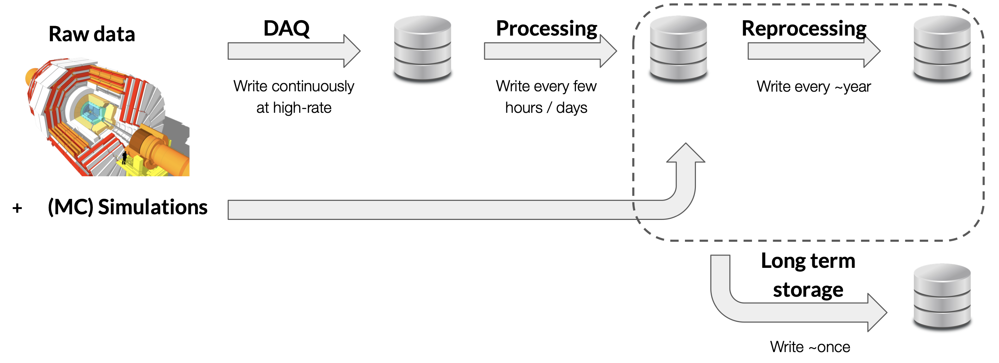
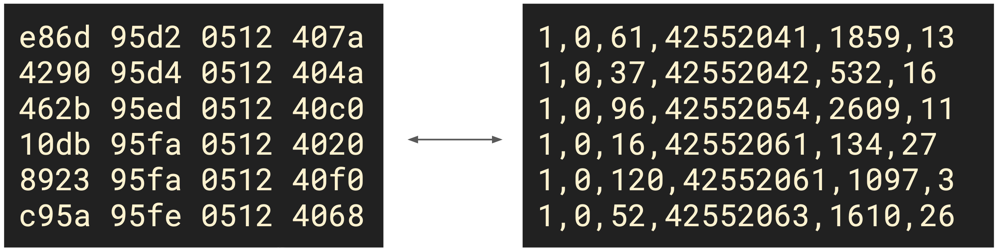
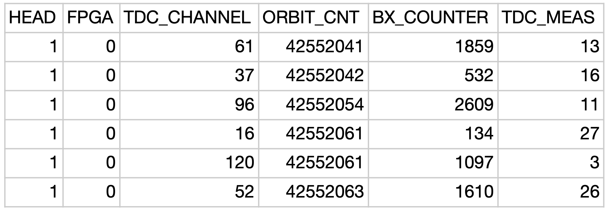
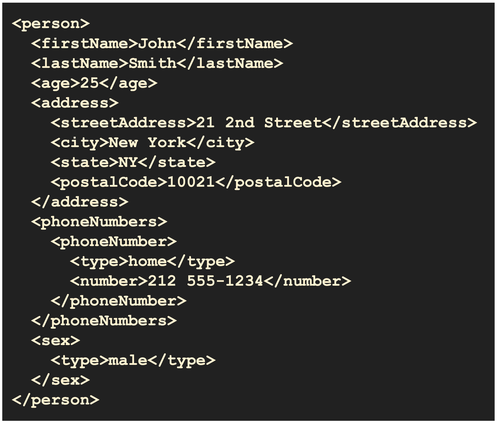
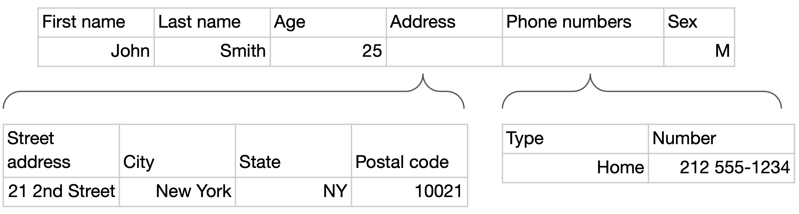

1 From Data to Datasets
By dataset we mean a set of information (data or simulations) collected from a series of sources (detectors and devices in general) in a certain time frame associated with a single domain or a single purpose.
The data, that is the basic unit of information contained in a dataset, is often indicated as datum or also as record.
Below is illustrated the formation of a dataset:
- A data acquisition system (DAQ) constantly writes to memory every piece of information that is collected by the sensors at the highest possible frequency.
- The stored data are then subjected to a first processing, on average after a certain number of hours or days, which includes cleaning, correction of any errors, normalization and — if necessary — also dimensionality reduction.
- Over a longer period of time (on average every year) the data are subjected to further processing involving more sophisticated techniques, such as Monte Carlo simulations.
- The data that are processed in any period of time are long-term archived in a dedicated memory space.

The acquired data sequences are usually divided according to the purpose of the collection: the division can be trivially divided by time frames (for example by year) or by data acquisition campaigns (think of the various Runs that are performed at the LHC); another possibility is the division by version of the software used, a choice adopted mainly for simulated data models.
1.0.1 Data Pipeline Stages
The journey from raw detector output to physics results passes through several well-defined pipeline stages. Each stage has a distinctive read/write profile that shapes the storage and computing infrastructure required.
| Stage | Write frequency | Read frequency | Description |
|---|---|---|---|
| DAQ | Continuous / high-rate | Rarely read back | Raw detector data written once as sensors fire; write-heavy by design |
| Processing | Every few hours or days | Moderate | Calibration and reconstruction applied to DAQ output; derived datasets written |
| Reprocessing | Every ~1 year | High (re-reads raw) | When algorithms improve the original raw data are re-processed; read-heavy on the DAQ tier |
| Analysis | Infrequent | Very high | Physicists repeatedly read small derived samples; essentially read-only |
A key pattern emerges: write frequency decreases and read frequency increases as data move from DAQ through to analysis. This asymmetry drives many design decisions in physics data management — raw DAQ storage must sustain high ingest rates, while analysis storage must deliver low-latency random reads.
Raw DAQ data are typically written once and subsequently only read. Long-term archives therefore optimise for storage density and read throughput rather than write speed. Tape-based systems, which excel at exactly this profile, remain dominant for DAQ-tier storage at large experiments.
1.0.2 Monte Carlo Simulations as a Data Source
Alongside real detector data, physics experiments produce large volumes of Monte Carlo (MC) simulated data. MC simulations generate synthetic datasets by modelling physics processes using random sampling: particles are generated according to theoretical cross-sections, propagated through a virtual detector model, and digitised to produce output in the same format as real detector readout.
MC datasets are not a shortcut — they pass through exactly the same processing pipeline as real data (reconstruction, calibration, tier conversion) so that simulated and measured distributions can be compared on equal footing. This comparison is the basis of most physics analyses: deviations between observed and expected (MC) distributions reveal new phenomena or constrain theoretical parameters.
In practice, MC datasets are often larger than the corresponding real-data samples. Because each simulated event is statistically independent, many millions of events are needed to reduce Monte Carlo statistical uncertainty below the level of the real-data uncertainty. A single physics analysis may consume more CPU-hours of simulation than all the data-taking combined.
1.1 Metadata
Datasets are often accompanied by metadata, so called because they are data whose function is to give information about the data itself contained in the dataset.
They perform three main functions: identification of the dataset and its contents, description of the acquisition conditions, and indication of access methods and permissions.
To understand the importance of metadata, let’s look at two very different files. The first is a generic photo of a cat (a_nice_cat_photo.jpeg): in this case the metadata may be superfluous, since any image viewing program will show the image; the metadata could however provide further information, such as who took the photo, in which folder it is located, what is the name of the cat, and so on.
Let’s now move on to the other file: 3CBC07C2-4B64-E611-B423-02163E0124E9.root. Without any metadata it is impossible to trace the meaning of what is contained in the file: it is, in fact, proton-proton collision data at \(13\ \text{TeV}\) that occurred in the CMS, part of a dataset collected in 2018 belonging to the Run-D campaign, \(3\ \text{GB}\) in size, to which only users of the CMS experiment have access. None of this would have been conceivable without data that explicitly told us what has just been written.
1.1.1 CMS Metadata Example: Path-as-Metadata
A concrete illustration of metadata in practice is the CMS (Compact Muon Solenoid) dataset naming convention used on the WLCG grid. A typical dataset path looks like:
/CMS/Run2018D/SingleMuon/MINIAOD/UL2018_MiniAODv2-v1/Every component of that path encodes structured metadata:
| Path component | Meaning |
|---|---|
CMS |
Experiment |
Run2018D |
Data-taking period (year + run era) |
SingleMuon |
Physics stream (events passing the single-muon trigger) |
MINIAOD |
Processing tier (reduced Analysis Object Data format) |
UL2018_MiniAODv2-v1 |
Reprocessing campaign and software version |
In addition, each dataset carries per-file and per-dataset metadata records stored separately, for example:
Run number: 325170
Luminosity section: 47
Centre-of-mass energy: 13 TeV
Dataset: SingleMuon
Data tier: MINIAOD
Number of files: ~3 000
Total size: ~12 TBThis design is an example of path-as-metadata: the file system path itself carries structured, human- and machine-readable metadata. It allows data management tools to locate, filter, and catalogue datasets without opening a single file, and it ensures that the provenance of every sample is unambiguous throughout its lifetime.
When hundreds of petabytes are spread across thousands of storage nodes, scanning file contents to identify datasets is prohibitively expensive. Encoding key metadata in the path allows lightweight string-matching queries to replace full catalogue scans, dramatically reducing the cost of data discovery.
1.2 Data Structures
Datasets can be divided into three different types depending on the way they are sorted:
1.2.1 Structured Data
They are organized in a rigid tabular format, so that each element is “boxed” in a unique position determined by a row and a column.
In the following figure we can observe an example of structured data: on the left is shown the raw format (the actual bits stored in memory in hexadecimal form), while on the right the same data are in a human-readable text format.

The tabular form can be displayed using various options, including the standard one offered by the Python pandas library.

Examples of structured data are files in .csv (comma-separated values) format and RDBMS (Relational DataBase Management System), also called relational databases suitable for the SQL language.
The main advantage of structured data is offered precisely by their structure, being already “packaged” according to a clear and established order. The disadvantage is given instead by the rigidity of this scheme, which limits the possibility of adding new columns and of acting on any errors in positioning.
1.2.2 Semi-Structured Data
They are organized according to structured logics but do not have a fixed scheme a priori, being deducible from the data themselves through tags and markup.
Examples of semi-structured data are files in .xml (extensible markup language) format, files in .json (JavaScript Object Notation) format and files in .yaml (YAML ain’t markup language) format.

Example of semi-structured data in two different formats
To verify the integrity of the data it is always possible to convert semi-structured data into structured data.
For example, a JSON document such as:
{"name": "Alice", "age": 30, "city": "Bologna"}can be mapped to a table row:
| name | age | city |
|---|---|---|
| Alice | 30 | Bologna |
Schema validation tools (e.g. JSON Schema) can enforce a structure on semi-structured data before ingestion into a relational system.

1.2.3 Unstructured Data
They are not schematized through any model nor is there any structure suggested by the data themselves.
These are usually data that define a continuous flow of information, such as files of a textual, audio, video and image nature.
The main advantage of this type of format is its maximum flexibility, adapting well to any type of data, while the other side of the coin is the difficult and laborious work to extract single pieces of information from the dataset.
1.3 Summary: Data Structure Types
| Data Type | Schema Fixed? | Suitable for RDBMS? | Typical Formats | Main Challenge |
|---|---|---|---|---|
| Structured | Yes — defined before storing | Yes | CSV, TSV, SQL tables | Rigidity; schema changes are costly |
| Semi-structured | Optional / flexible | With conversion | JSON, XML, YAML, HDF5 | Heterogeneity; variable fields |
| Unstructured | No | No | Images, audio, text, video | Extracting information requires specialised tools |
1.4 What is Data Management?
This chapter introduced the types of data we will work with throughout the course. The subsequent chapters address the full data management lifecycle:
| Topic | Chapter |
|---|---|
| Data storage — media, performance metrics, scalability | Storage and Scalability |
| Reliability and security — RAID, encryption, authentication | Reliability and Security |
| File systems — local and distributed | File Systems, Distributed File Systems |
| Database management systems — relational and NoSQL | Databases, NoSQL Databases |
Effective data management means choosing the right storage medium, ensuring data is durable and secure, and providing efficient access through appropriate file systems and database systems.
1.5 Exercises
Explain the difference between structured and semi-structured data. For each, describe the main advantages and disadvantages and provide a concrete example of such data.
Solution. (To be completed.)
What data management concept is key to interpreting and contextualising individual records in a dataset? Define the concept in detail and explain why it is essential.
Solution. (To be completed.)
Name at least two different types of metadata. Describe metadata you have already encountered in your physics experience and explain how you used it to interpret data.
Solution. (To be completed.)